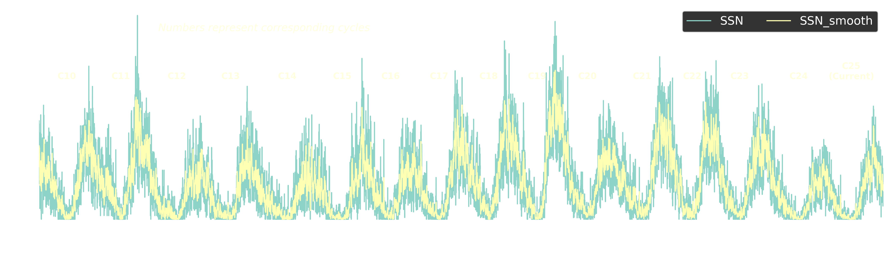

Visualizando el latido magnético del Sol
Las manchas solares fungen como auténticas ventanas observables hacia la extrema y compleja actividad magnética de nuestra estrella. A través de sus característicos ciclos cuasi-periódicos de 11 años, modulan de forma directa el clima espacial, alterando el entorno interplanetario y constituyendo un factor crítico para la seguridad de la tecnología terrestre, las redes eléctricas globales y los sistemas de posicionamiento satelital.
Presentamos la Espiral Solar (Espiral de Schwabe), una visualización científica diseñada para mostrar el latido solar a través del tiempo, inspirada en las espirales climáticas popularizadas por el climatólogo Ed Hawkins (Universidad de Reading, Climate Lab Book, 2016). Este modelo tridimensional permite desentrañar la compleja evolución de los ciclos de manchas solares mediante una arquitectura cilíndrica continua que integra datos diarios. Al entrelazar la precisión de los registros heliofísicos con una estética moderna, la visualización facilita la comprensión de la variabilidad magnética y la dinámica a largo plazo de nuestra estrella, ofreciendo una perspectiva tan rigurosa como impactante para la investigación y la divulgación del clima espacial.
Visualizaciones Dinámicas 3D
En las siguientes animaciones podrás apreciar una comparativa de los ciclos solares modelados en espiral temporal, revelando la evolución y acumulación de la actividad magnética a lo largo de las décadas. "Fuente: WDC-SILSO, Real Observatorio de Bélgica, Bruselas, disponible en el enlace: https://www.sidc.be/SILSO/datafiles, DOI: https://doi.org/10.24414/qnza-ac80".
Espiral Cilíndrica Diaria
Representación tridimensional continua basada en registros diarios de manchas solares.
Evolución de Ciclos y Rotación
Vista en rotación continua detallando la acumulación temporal de la actividad solar.
Serie Histórica (1850 - Presente)
Representación de las manchas solares a través de los años. Muestra un comportamiento semicíclico y marcadamente repetitivo, variando de manera notable en diferentes décadas y ciclos solares según los registros instrumentales modernos. "Fuente: WDC-SILSO, Real Observatorio de Bélgica, Bruselas, disponible en el enlace: https://www.sidc.be/SILSO/datafiles, DOI: https://doi.org/10.24414/qnza-ac80".

Figura analítica de alta resolución adaptada para la visualización de la variabilidad a largo plazo.
Amplitud y Periodicidad de los Ciclos
Los registros desde 1850 confirman una cuasi-periodicidad de 11.2 años en el ciclo de Schwabe. Las amplitudes de los picos varían considerablemente, existiendo ciclos seculares de alta energía (como el Ciclo 19 en 1957-1958) que superan ampliamente la media histórica.
Intensidad del Campo Magnético Fotosférico
En las umbras de las manchas principales, la intensidad del campo magnético local alcanza de 2,500 a 4,000 gauss, suprimiendo la transferencia de energía convectiva y reduciendo la temperatura radiativa local en más de 1,500 Kelvin.
¿Qué son las manchas solares?
Las manchas solares son regiones localizadas en la fotosfera del Sol que manifiestan una apariencia notablemente oscura en comparación con el tejido brillante circundante. Este oscurecimiento es el resultado directo de temperaturas superficiales significativamente más bajas —aproximadamente 3,500 °C frente a los 5,500 °C habituales del resto de la fotosfera—. Dicho enfriamiento relativo se origina por la presencia de flujos magnéticos monumentales e intensos que emergen desde el interior solar, los cuales bloquean y suprimen eficazmente los penachos de convección térmica ascendente.
Impacto en el Clima Espacial
Más allá de su fascinante morfología visual, la aparición y densidad de grupos complejos de manchas solares actúan como el motor principal del clima espacial dinámico. Durante las fases de máxima actividad, los campos magnéticos retorcidos almacenan y liberan de manera explosiva cantidades colosales de energía en forma de erupciones solares (flares) y eyecciones de masa coronal (CME). Al propagarse por el medio interplanetario e impactar la magnetosfera terrestre, desatan tormentas geomagnéticas capaces de inducir corrientes parásitas en redes eléctricas de alta tensión, degradar o interrumpir señales de navegación satelital (GPS), dañar la circuitería electrónica de los satélites en órbita y poner en riesgo la integridad de las tripulaciones espaciales.
Hitos Históricos y Datos Curiosos
Eventos clave, investigaciones pioneras y registros visuales de misiones espaciales de la NASA.
El Mínimo de Maunder
Un período de 70 años donde las manchas solares prácticamente desaparecieron, coincidiendo con la fase más fría de la "Pequeña Edad de Hielo" en Europa.
El Evento Carrington
La tormenta geomagnética más intensa registrada en la historia moderna. Provocó fallas en telégrafos globales y auroras boreales visibles en latitudes bajas.
Tamaños Colosales
Muchas manchas solares individuales son tan vastas que varios planetas Tierra cabrían holgadamente dentro de su núcleo oscuro o umbra.

Estructura Fibrilar de Alta Resolución
Las observaciones ópticas revelan filamentos finos e intricados flujos magnéticos en la penumbra, clave para entender la disipación de energía solar.

Lazos Coronales y Erupciones
Asociadas a complejos grupos de manchas, las reconexiones magnéticas en la corona exterior proyectan plasma supercaliente al espacio.

Migración y Ley de Spörer
Al iniciar un ciclo, las manchas brotan a altas latitudes (30°-45°) y migran gradualmente hacia el ecuador solar a medida que el ciclo madura.

Mapeo de Polaridad Magnética
Los magnetogramas espaciales revelan que las manchas solares actúan típicamente en pares con polaridades magnéticas opuestas en cada hemisferio.

Inversión Magnética Completa
El campo magnético global del Sol experimenta una inversión polar completa cada 11 años, requiriendo un ciclo de Hale de 22 años para retornar al estado original.

Fluctuación de la Irradiancia
A pesar de que las manchas oscurecen zonas locales, la emisión ultravioleta total y de rayos X aumenta de forma drástica en máximos solares debido a las fáculas brillantes.

Pionera en Predicción: Jeanette Scissum-Mickens
Matemática de la NASA que en 1967 publicó un histórico informe con nuevas técnicas de pronóstico para el ciclo de manchas solares, marcando un hito en la ciencia espacial en Marshall.
Fuente primaria: NASA-TM-X-53593 (NTRS, 1967)
Tránsito de Venus y Distancia Astronómica
Registrado desde la ISS en 2012 y en siglos pasados, este tránsito permitió a los científicos calcular con precisión la distancia entre la Tierra y el Sol, además de analizar la atmósfera venusiana.

Erupción Gigante de Rayos X
Imagen capturada por el SDO que muestra una potente llamarada clase X3.1 desatada desde regiones activas complejas en octubre de 2014.